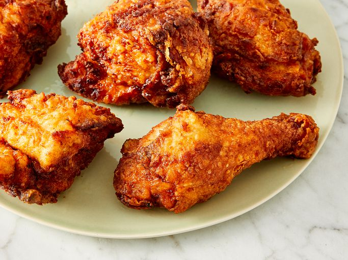

Crispy Fried Chicken at Home

Description
Simple recipe that anyone can do to get the juiciest, most succulent, yet crispy, piece of homemade fried chicken ever!
What You Need
- 1 (4 pound) chicken, cut into pieces
- 1 cup of buttermilk
- 2 cups all-purpose flour for coating
- 1 teaspoon paprika
- salt and pepper to taste
- 2 quarts vegetable oil for frying
Directions
- Take your cut up chicken pieces and skin them if you prefer
- Put the flour in a large plastic bag (let the amount of chicken you are cooking dictate the amount of flour you use). Season the flour with paprika, salt and pepper to taste (paprika helps to brown the chicken)
- Dip chicken pieces in buttermilk then, a few at a time, put them in the bag with the flour, seal the bag and shake to coat well.
- Place the coated chicken on a cookie sheet or tray, and cover with a clean dish towel or waxed paper. LET SIT UNTIL THE FLOUR IS OF A PASTE-LIKE CONSISTENCY. THIS IS CRUCIAL!
- Fill a large skillet (cast iron is best) about 1/3 to 1/2 full with begetable oil. Heat until VERY hot
- Put in as many chicken pieces as the skillet can hold. Brown the chicken in HOT oil on both sides.
- When browned, reduce heat and cover skillet; let cook for 30 minutes (the chicken will be cooked through but not crispy). Remove cover, raise heat again, and continue to fry until crispy.
- Drain the fried chicken on paper towels. Depending on how much chicken you have, you may have to fry in a few shifts, Keep the finished chicken in a slightly warm oven while preparing the rest.
And thats it! Enjoy your meal, and remember to recycle the oil used to reduce wastage!